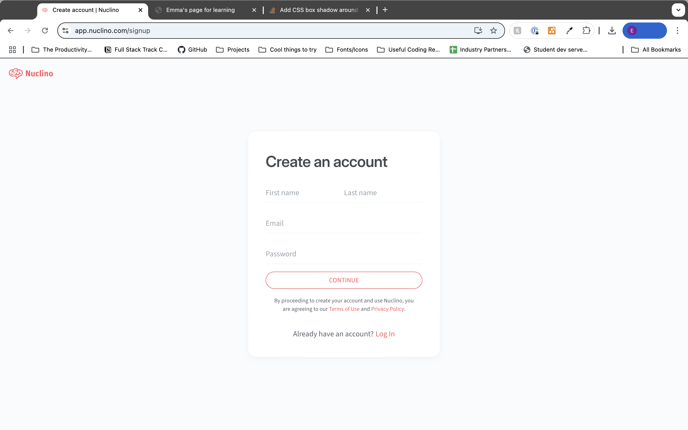
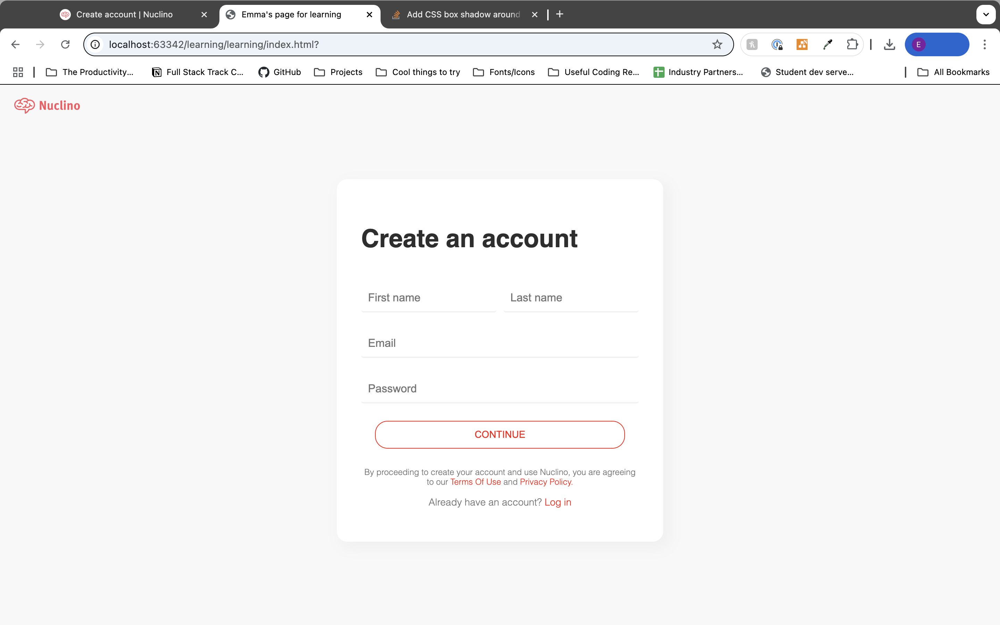
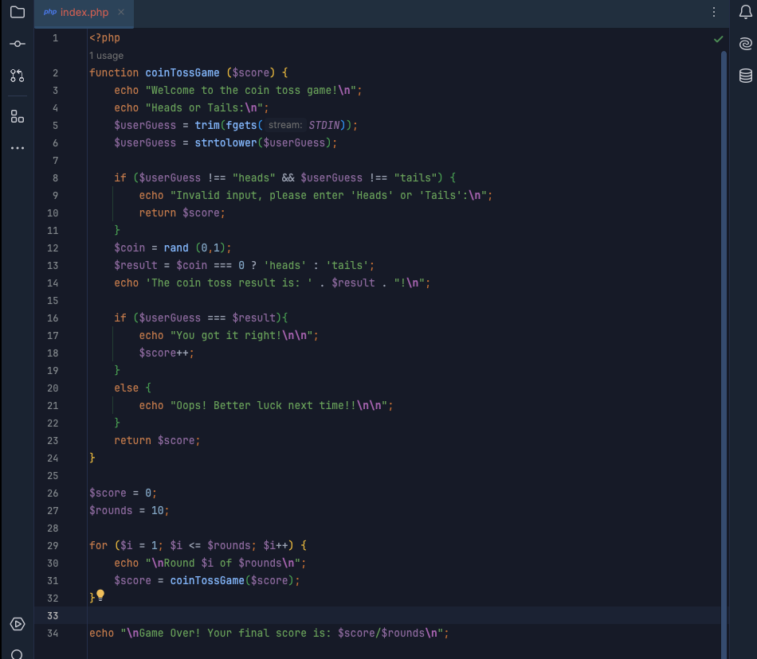
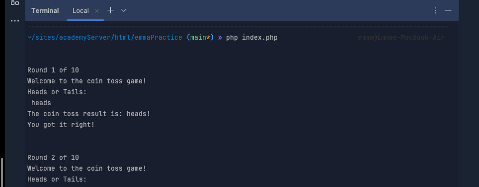
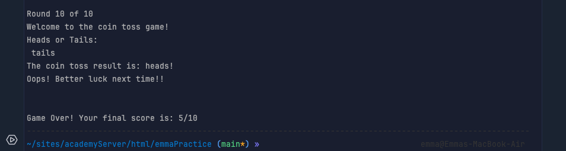

Blog
Reflections | Journey to Full Stack Developer | Projects
Welcome! A little bit about me...
Welcome to my blog page and my first post! My name is Emma, I'm a Full Stack Developer from Bath in Somerset.
It's 5th December 2024. The weather is very windy and overcast and the boiler is being temperamental.
I'm a month and a half out of completing the most life-changing 16 weeks of my life, and in between projects,
going over notes and applying for jobs, I find myself reflecting on how far I've come.
This time last year I was bending over backwards for a company that didn't appreciate me, working as hard as
a could to meet Christmas deadlines and feeling that possibly, this hard work will pay off next year. Sadly
(but thankfully), it did not. I moved back in with my parents and spent the next few months applying of jobs
with wages I couldn't live on and wondering what my next step was. Deciding to embrace this time as a career
break, I focused a lot on my old love, photography, using the time I had to reignite that passion. But I
wanted more. I didn't want to go back into freelancing, I'd had enough of the irregular jobs and not knowing
whether I'd have enough at the end of the month. I wanted stability, financial security and a career that I
not only loved, but could progress in.
That's when I stumbled across coding. Aware of friends and friends-of-friends who are in the industry
(and recognising their progression and security), I decided to study. At first my mind was absolutely
overwhelmed by what I was looking at. I had never exposed my brain to lines of code before - it may as well
have been written backward and upside down! Eventually I came across Code First Girls brilliant resources and
free courses and I signed up for an 8 week course during the evenings. Feeling excited about my learning, I
knew this was something I could get my teeth into, but with the right teaching and learning. I applied for
their Degree program, but in the back of my mind I knew that I'd struggle with the remote learning. I needed
time and support to get my head around this stuff, and an online classroom for me wouldn't cut it.
That's when I found iO Academy in Bath. Opting for the Full Stack Track, their 16 week in-person bootcamp in
Widcombe, I jumped at the chance and signed myself up. Now, I won't say that the learning was a breeze and
I'm now a super tech wizard. That would be lying. It was in fact, the hardest, but equally the best thing
I've ever done. It's the most I've ever pushed myself, in every aspect of my being. Mentally, emotionally,
academically - You name it, I grew it. With the amazing support from the team there and my family, I graduated
in October and I've never been more proud of myself and the people around me. This is solid proof that I can
do hard things, I'm resilient, and with the right support I can achieve anything I want. I had literally never
seen a line of code at the start of the year, and now I'm building websites and applications, using front and
back-end frameworks that 5 months ago I didn't know existed, and confidently and happily applying for Junior
Dev roles.
Life. Changing.
Since graduating, I've been celebrating my achievement this year with rest and working on my mental wellness,
spending more time with my family (and my beautiful baby niece), taking the time to 'play' with the skills
I've learned and continuing my learning of other languages, and of course, applying for Junior Dev roles!
So, what can you expect from this blog? I'm not entirely sure yet, but certainly notes on projects I'm working
on, things I find cool/interesting, and reflections on where I'm at.
See you in the next one!
5th December 2024
Best way to learn is to copy, right?
I haven't got an ongoing project currently, and I've been deciding how best I should use my time to progress
my learning. I have so many notes on my Notion account that I'm struggling to add more without it telling me
to upgrade, so this morning I decided to go through my notes and just see what has settled in more and what
needs further investigation. Getting a little side-tracked, I came across exercises where we had to recreate
a website using the skills we had just learned, and I remembered how rewarding I found those tasks. With less
than a years experience under my belt, at times when given a task I had found it difficult to envisage, and
so having a brilliantly designed site already made up for you to just work out how to put it together was
(and still is) a learning tool I reach for a lot. I don't have to worry about designing, UX, coming up with a
concept and learning how. Instead, I can just focus on how. In doing this a lot of times and working on my own
passion projects, my creative juices are starting to flow, and I'm getting that visual of where I'm headed,
which is exciting!
Today I decided to have fun with replicating the login page for Nuclino. Here is their login page:

And here is mine:

What I enjoyed:
I enjoyed the exercise as a whole. It warms my brain up when I'm not feeling like a particular project or
area of study, and I enjoy feeling inspired from the design.
My main area of learning:
Getting the First name and Last name input fields to line up next to each other,
while lining up with the two fields below.
5th December 2024
PHP Refresher - Command Line Heads or Tails Game
I haven't fancied a big project for a few days - I've found myself more interested in returning to my notes
from my bootcamp and revisiting exercises and projects I've moved on from. There's something magical about
going through something you once couldn't wrap your head around and now feeling more confident and capable.
Today I hopped over to my PHP module and opened up a file to explore some of the code snippets from my notes.
In the early stages of PHP (I want to say day 2?) we had a Heads or Tails exercise to create a simple game on
the CL. Wanting to test myself and refresh my memory, I started building it step by step. I started with the
coin toss it's in most simple format:
$coin = rand(0,1);
echo $coin === ? 'heads' : 'tails';
Once I had that, I built upon it, with the ability for the user to input their guess, to handling if the user
doesn't enter the correct type of guess, to the score and the rounds at the end.



Nice to refresh my PHP brain!
6th December 2024